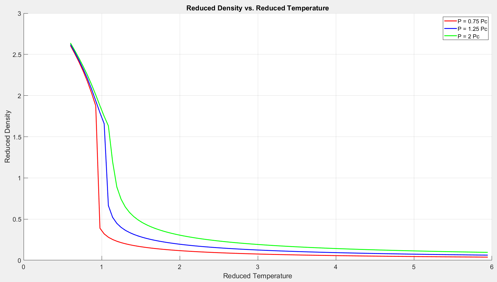
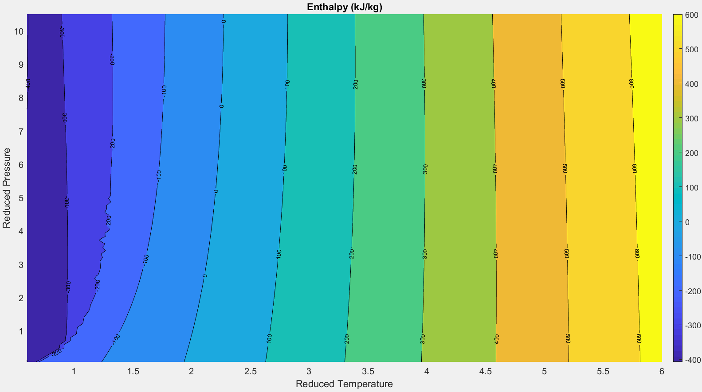

Oxygen Phase Diagram
The oxygen phase diagram displays similar trends to those discussed on the hydrogen phase diagram in the previous section. As shown below in Figures 2.3.1. and 2.3.2, a discontinuity in the density field is clearly visible along the saturation line, as expected due to the simultaneous existence of both liquid and gaseous oxygen. This discontinuity gradually smooths out along the pseudo-boiling line above the critical point. The turbulence visible along this line is again due to mathematical difficulties the Newton-Raphson algorithm encounters near the pseudo-boiling line. Along this line the solution is extremely sensitive to small changes in temperature. This makes convergence difficult to achieve.
Figure 2.3.1
Figure 2.3.2
The critical properties of oxygen plotted in Figure 2.3.2. are as follows:
$ \rho_c = \text{436.1}\ \frac{\text{kg}}{m^3} $
$T_c = \text{154.6 K}$
$P_c = \text{5.0 MPa}$
Again, the thermodynamic properties exhibit large rates of change with respect to temperature near the saturation and pseudo-boiling lines. Figure 2.3.3 and 2.3.4 demonstrates this trend for density and specific heat along three different isobars. The largest density gradients occur when approaching the saturation line, and the largest specific heat gradients occur near the pseudo-boiling line.

Figure 2.3.3

Figure 2.3.4
Figure 2.3.5 (below) shows a contour plot of specific heat over the reduced P-T plane. The mathematical model used to generate this plot imposes a singularity in the $C_p$ field when crossing the pseudo-boiling line. This results in the turbulence visible along this line in the chart below. The $C_p$ field smooths out rapidly to either side, and the model again provides accurate results. This trend is also visible above in Figure 2.3.4. While this discontinuity makes for some less than ideal contour charts, it does clearly illustrate the location of the pseudo-boiling line in the reduced P-T plane.
Figure 2.3.5
As with hydrogen, the oxygen phase diagram also contains a large region in which the fluid can be modeled accurately by the ideal gas law. This region is shown below in the oxygen compressibility factor chart, Figure 2.3.6. Compressibility factor represents the ratio of the real fluid pressure (accounting for the intermolecular forces significant in liquids) to the pressure that would be exerted by an ideal gas at the same conditions. The ideal gas equation of state holds true when Z=1. Allowing for a 5 percent margin of error, the ideal gas law can be considered applicable in the area where oxygen’s compressibility factor falls between 0.95 and 1.05. For oxygen, this region occurs for reduced temperatures greater than 2 and reduced pressures less than 4. Figure 2.3.6 clearly illustrates discontinuities along the pseudo-boiling line, again due to large gradients in the density and specific heat fields. This figure shows that the “quadrants” established by the traditional phase diagram (Figure 2.1.3) do not necessarily correspond to meaningful physical differences in the thermodynamic properties of the fluid.
Figure 2.3.6
Figure 2.3.7 plots the enthalpy of oxygen across the reduced P-T plane. Notice how for higher temperatures enthalpy becomes a function of temperature alone (nearly independent of pressure). At low temperatures and pressures near the critical point enthalpy is not independent of pressure.

Figure 2.3.7
Figure 2.3.8 plots the isobaric heat capacity of oxygen as function of reduced density and temperature near the critical point. The labels overlaid on top of this figure correspond to the turbomachinery stations described in Table 1.2.1. This provides a visual representation of how the thermodynamic properties of oxygen change as it flows through the SSME turbomachinery, all the way from the external storage tank to the pre-burner inlets. It is interesting to note that as oxygen flows through the SSME turbomachinery, it remains at a subcritical temperature all the way to the main combustion chamber. Reduced temperatures never rise above the reduced critical temperature (1.0). This is in contrast with hydrogen, where reduced temperatures go well into the supercritical range (up to 10) when flowing through the regenerative cooling circuit. Refer to Figure 2.2.6.
Another interesting comparison arises when examining compressibility factors. Although both oxygen and hydrogen flow well into the supercritical pressure range, oxygen’s compressibility factor remains fairly close to 1.0 all the way to the main combustion chamber (see Figure 2.3.6 above). Referring back to Table 1.2.1, it is evident that oxygen remains fairly incompressible as it flows through the engine. Its density remains very close to 1130 $\frac{\text{kg}}{m^3}$. This is in contrast to hydrogen, where compressibility factors do not fall near the z=1.0 line. This is reflected in the hydrogen densities recorded in Table 1.1.1, which vary from 21 - 70 $\frac{\text{kg}}{m^3}$.
Figure 2.3.8
| Station | Component | $\frac{P}{P_c}$ | $\frac{T}{T_c}$ |
|---|---|---|---|
| $19$ | High Pressure Oxidizer Turbopump Inlet | 0.6 | 0.6 |
| $20$ | High Pressure Oxidizer Turbopump Exit | 5.6 | 0.7 |
| $25$ | Preburner Oxidizer Boost Pump Exit | 9.6 | 0.7 |
| $26$ | Oxidizer Preburner O2 Inlet | 7.9 | 0.7 |
Table 2.3.1
Mathematical Details
The thermodynamic properties of oxygen (pressure, enthalpy, entropy, specific heat, and compressibility factor) are calculated using the same fundamental equations as for hydrogen, Equations 2.2.2 – 2.2.7. The difference between these two models arises in the empirical curve fit used to capture the ideal and residual components of the Helmholtz energy. The oxygen model uses Equations 2.3.1 and 2.3.2 to account for these components.[12]
| $$ \alpha^0 =k_1\,\tau^{1.5}+k_2\,\tau^{-2}+k_3\,\text{ln}\left(\tau\right)+k_4\,\tau+k_5\,\text{ln}\left(e^{k_{\,7}\tau}-1\right)+k_6\,\text{ln}\left(1+\frac{2}{3}\,e^{-k_8\tau}\right)+k_9+\text{ln}\left(\frac{\delta}{\delta_0}\right)$$ | $$2.3.1$$ |
| $$\alpha^r = \sum_{i=1}^{13}n_i\,\delta^{\,r_i}\,\tau^{s_i}+e^{-\delta^2}\,\sum_{i=14}^{24}\,n_i\,\delta^{\,r_i}\,\tau^s_i+e^{-\delta^4}\,\sum_{i=25}^{32}n_i\,\delta^{\,r_i}\,\tau^s_i $$ | $$2.3.2$$ |
Closed-form solutions for the derivatives of Equations 2.3.1 and 2.3.2 are listed below. [12] The subscripts in the following equations indicate derivatives with respect to $\tau$ and $\delta$. One subscript represents the first derivative, and two represent the second derivative. For example,
$$\alpha^r_\tau = \frac{\partial\alpha^r}{\partial\tau}$$
$$\alpha^r_{\tau\delta} = \frac{\partial^2\alpha^r}{\partial\tau\partial\delta}$$
| Equation Number | Expression |
|---|---|
| $$2.3.3$$ | $$\alpha^{r}_{\delta} =\sum_{i}n_i\,r_i\,\delta^{r_i-1}\,\tau^{s_i}+\text{exp}\left(-\delta^2\right)\,\sum_{i}n_i\,\left[r_i\,\delta^\left(r_i-1\right)-2\,\delta^{\,r_i+1}\right]\,\tau^{s_i}+\text{exp}\left(-\delta^4\right)\,\sum_{i}n_i\,\left[r_i\,\delta^\left(r_i-1\right)-4\,\delta^{\,r_i+3}\right]\,\tau^{s_i}$$ |
| $$2.3.4$$ | $$\alpha^{r}_{\tau} = \sigma_i\,n_i\,s_i\,\delta^{\,r_i}\,\tau^{s_i-1}+\text{exp}\left(-\delta^2\right)\,\sum_{i}n_i\,s_i\,\delta^{r_i}\,\tau^{s_i-1}+\text{exp}\left(-\delta^4\right)\,\sum_{i}n_i\,s_i\,\delta^{r_i}\,\tau^{s_i-1} $$ |
| $$2.3.5$$ | $$\alpha^{0}_{\tau} = 1.5\,k_1\,\tau^{0.5}-2\,k_2\,\tau^{-3}+\,k_3\,\tau^{-1}+k_4+k_5\,\frac{k_7\,\text{exp}\left(k_7\,\tau \right)}{\text{exp}\left(k_7\,\tau\right)-1 }-k_6\,\frac{\frac{2}{3}\,k_8\,\text{exp}\left(-k_8\,\tau \right)}{1+\frac{2}{3}\,\text{exp}\left( -k_8\,\tau\right)}$$ |
| $$2.3.6$$ | $$ \alpha^{0}_{\tau\tau} =0.75\,k_1\,\tau^{-0.5}+6\,k_2\,\tau^{-4}-\,k_3\,\tau^{-2}-k_5\,\frac{k_{7}^2\,\text{exp}\left(k_7\,\tau \right)}{\left[\text{exp}\left(k_7\,\tau\right)-1\right]^2}+k_6\,\frac{\frac{2}{3}\,k_{8}^2\,\text{exp}\left(-k_8\,\tau \right)}{\left[1+\frac{2}{3}\,\text{exp}\left( -k_8\,\tau\right)\right]^2} $$ |
| $$2.3.7$$ | $$ \alpha^{r}_{\tau\tau} = \sum_{i}n_i\,s_i\,\left(s_{i}-1\right)\,\delta^{r_i}\,\tau^{s_i-2}+\text{exp}\left(-\delta^2\right)\,\sum_{i}n_i\,s_i\,\left(s_{i}-1\right)\,\delta^{r_i}\,\tau^{s_i-2}+\text{exp}\left(-\delta^4\right)\,\sum_{i}n_i\,s_i\,\left(s_{i}-1\right)\,\delta^{r_i}\,\tau^{s_i-2} $$ |
| $$2.3.8$$ | $$ \alpha^{r}_{\delta\delta} = \sum_{i}n_i\,r_i\,\left(r_{i}-1\right)\,\delta^{r_i-2}\,\tau^{s_i}+\text{exp}\left(-\delta^2\right)\,\sum_{i}n_i\left[r_i(r_i-1)\,\delta^{r_i-2}-2\,(2\,r_i+1)\,\delta^{r_i}+4\,\delta^{r_i+2}\right]\,\tau^{s_i}+\text{exp}\left(-\delta^4\right)\,\sum_{i}n_i\left[r_i(r_i-1)\,\delta^{r_i-2}-4\,(2\,r_i+3)\,\delta^{r_i+2}+16\,\delta^{r_i+6}\right]\,\tau^{s_i}$$ |
| $$2.3.9$$ | $$ \alpha^{r}_{\delta\tau} = \sum_{i}n_i\,r_i\,s_i\,\delta^{\,r_i\,-1}\tau^{\,s_i\,-1}+\text{exp}\left(\delta^{-2}\right)\sum_{i}n_i\,\left(r_i\,\delta^{r_i\,-1}-2\,\delta^{r_i\,+1}\right)\,s_i\,\tau^{s_i-1}+\text{exp}\left(-\delta^{-4}\right)\sum_{i}n_i\,\left(r_i\,\delta^{r_i\,-1}-4\,\delta^{r_i\,+3}\right)\,s_i\,\tau^{s_i-1} $$ |
The following table contains the coefficients used in Equations 2.3.1 - 2.3.9.[12]
| $r_{1}$ | $r_{2}$ | $r_{3}$ | $r_{4}$ | $r_{5}$ | $r_{6}$ | $r_{7}$ | $r_{8}$ | $r_{9}$ | $r_{10}$ | $r_{11}$ | $r_{12}$ | $r_{13}$ | $r_{14}$ | $r_{15}$ | $r_{16}$ | $r_{17}$ | $r_{18}$ | $r_{19}$ | $r_{20}$ | $r_{21}$ | $r_{22}$ | $r_{23}$ | $r_{24}$ | $r_{25}$ | $r_{26}$ | $r_{27}$ | $r_{28}$ | $r_{29}$ | $r_{30}$ | $r_{31}$ | $r_{32}$ |
|---|---|---|---|---|---|---|---|---|---|---|---|---|---|---|---|---|---|---|---|---|---|---|---|---|---|---|---|---|---|---|---|
| 1 | 1 | 1 | 2 | 2 | 2 | 3 | 3 | 3 | 6 | 7 | 7 | 8 | 1 | 1 | 2 | 2 | 3 | 3 | 5 | 6 | 7 | 8 | 10 | 2 | 3 | 3 | 4 | 4 | 5 | 5 | 5 |
| $s_{1}$ | $s_{2}$ | $s_{3}$ | $s_{4}$ | $s_{5}$ | $s_{6}$ | $s_{7}$ | $s_{8}$ | $s_{9}$ | $s_{10}$ | $s_{11}$ | $s_{12}$ | $s_{13}$ | $s_{14}$ | $s_{15}$ | $s_{16}$ | $s_{17}$ | $s_{18}$ | $s_{19}$ | $s_{20}$ | $s_{21}$ | $s_{22}$ | $s_{23}$ | $s_{24}$ | $s_{25}$ | $s_{26}$ | $s_{27}$ | $s_{28}$ | $s_{29}$ | $s_{30}$ | $s_{31}$ | $s_{32}$ |
|---|---|---|---|---|---|---|---|---|---|---|---|---|---|---|---|---|---|---|---|---|---|---|---|---|---|---|---|---|---|---|---|
| 0 | 1.5 | 2.5 | 5 | 0.5 | 2 | 0 | 1 | 0.5 | 0 | 2 | 5 | 2 | 5 | 6 | 3.5 | 5.5 | 3 | 7 | 6 | 8.5 | 4 | 6.5 | 5.5 | 2 | 11 | 18 | 11 | 23 | 17 | 18 | 23 |
| $n_{1}$ | $n_{2}$ | $n_{3}$ | $n_{4}$ | $n_{5}$ | $n_{6}$ | $n_{7}$ | $n_{8}$ | $n_{9}$ | $n_{10}$ | $n_{11}$ | $n_{12}$ | $n_{13}$ | $n_{14}$ | $n_{15}$ | $n_{16}$ | $n_{17}$ | $n_{18}$ | $n_{19}$ | $n_{20}$ | $n_{21}$ | $n_{22}$ | $n_{23}$ | $n_{24}$ | $n_{25}$ | $n_{26}$ | $n_{27}$ | $n_{28}$ | $n_{29}$ | $n_{30}$ | $n_{31}$ | $n_{32}$ |
|---|---|---|---|---|---|---|---|---|---|---|---|---|---|---|---|---|---|---|---|---|---|---|---|---|---|---|---|---|---|---|---|
| 0.398377 | -1.84616 | 0.418347 | 0.023706 | 0.097717 | 0.030179 | 0.022734 | 0.013573 | -0.04053 | 0.000545 | 0.000511 | 2.95E-07 | -8.7E-05 | -0.21271 | 0.087359 | 0.127551 | -0.09068 | -0.0354 | -0.03623 | 0.013277 | -0.00033 | -0.00831 | 0.002125 | -0.00083 | -2.6E-05 | 0.0026 | 0.009985 | 0.0022 | 0.025914 | -0.12596 | 0.147836 | -0.01011 |
| $k_{1}$ | $k_{2}$ | $k_{3}$ | $k_{4}$ | $k_{5}$ | $k_{6}$ | $k_{7}$ | $k_{8}$ | $k_{9}$ |
|---|---|---|---|---|---|---|---|---|
| -0.00074 | -6.6E-05 | 2.50042 | -21.4487 | 1.01258 | -0.94437 | 14.5066 | 74.9148 | 4.14817 |
Table 2.3.2
Implicit Solution Scheme.
Once again, an implicit method must be used in conjunction with these equations in order model the thermodynamic properties of oxygen as function of temperature and pressure rather than as a function of temperature and density. This is accomplished through use of a Newton-Raphson scheme, as discussed in Section 2.2. The initial density guess used to start the Newton iteration is based on the relative location in the phase diagram with respect to the saturation and pseudo-boiling lines. Pressure and temperature data along the saturation line is readily available from the NIST website. Pressure along the oxygen pseudo-boiling line is modeled by Equation 2.3.10: [5]
As with hydrogen, the Newton-Raphson scheme does not perform particularly well near the oxygen pseudo-boiling and saturation lines due to the larges rates of change that develop with respect to temperature. This results in the turbulence seen above in Figures 2.3.1-2.3.7. The turbulence quickly smooths out as temperature moves away from either side of these lines.